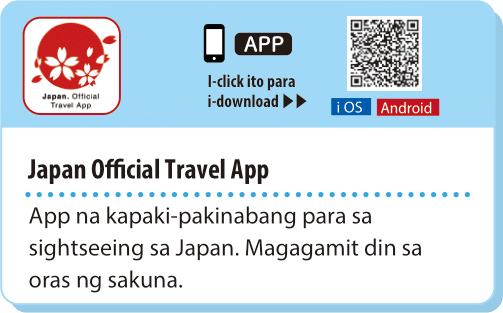

Websites and apps in times of disaster
Maraming iba’t-ibang natural disaster ang nangyayari sa Japan kagaya ng lindol, pagputok ng bulkan, tsunami, bagyo, baha at landslide.
Sa oras ng sakuna ay importanteng makakuha ng napapanahong impormasyon upang malaman ang sitwasyon at makapag-evacuate kung kailangan. Ang mga website at app sa ibaba ay maaaring makatulong tungkol dito.
Japan Meteorological Agency website
Impormasyon tungkol sa sakuna (Nihongo, English, Tagalog) mula sa ahensya ng gobyerno na namamahala sa weather forecasting at disaster prevention.
Stay Safe with NHK WORLD-JAPAN
Iba’t-ibang serbisyo para sa kahandaan sa sakuna (English) mula sa public broadcaster ng Japan.
Web apps
Maaring i-download ang sumusunod na app para sa smartphone.

